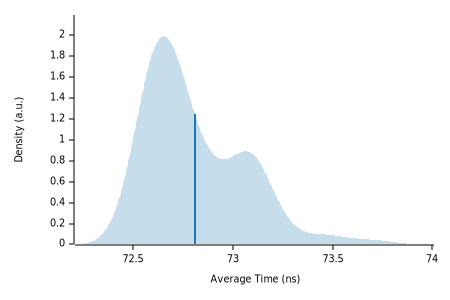

|  |
| Lower bound | Estimate | Upper bound | |
|---|---|---|---|
| Slope | 72.622 ns | 72.640 ns | 72.661 ns |
| R² | 0.9996619 | 0.9996707 | 0.9996584 |
| Mean | 72.762 ns | 72.808 ns | 72.856 ns |
| Std. Dev. | 200.04 ps | 241.95 ps | 281.83 ps |
| Median | 72.688 ns | 72.720 ns | 72.775 ns |
| MAD | 138.70 ps | 187.00 ps | 263.70 ps |
The plot on the left displays the average time per iteration for this benchmark. The shaded region shows the estimated probability of an iteration taking a certain amount of time, while the line shows the mean. Click on the plot for a larger view showing the outliers.
The plot on the right shows the linear regression calculated from the measurements. Each point represents a sample, though here it shows the total time for the sample rather than time per iteration. The line is the line of best fit for these measurements.
See the documentation for more details on the additional statistics.
{kind=link}
{kind=link}
{kind=link}
{kind=link}
{kind=link}
{kind=link}
{kind=link}
{kind=link}